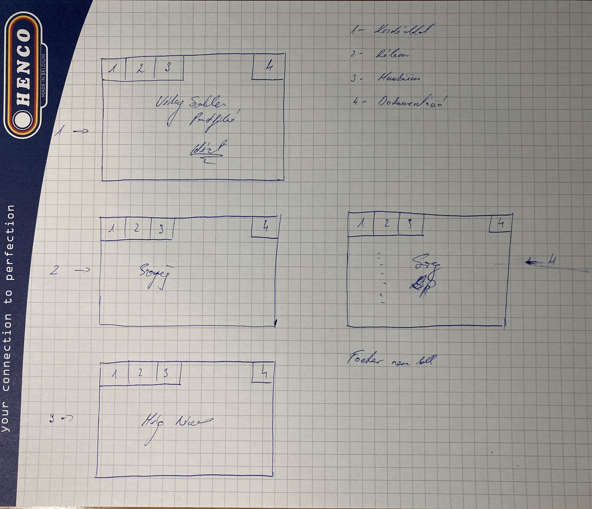
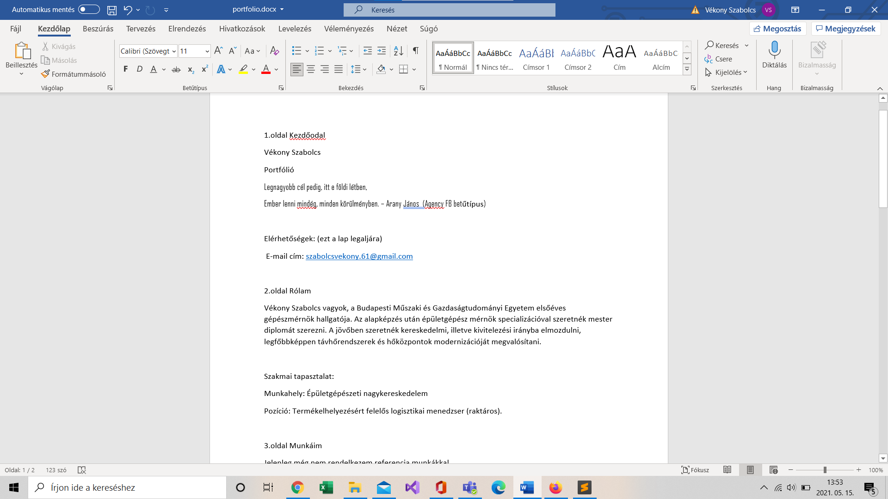
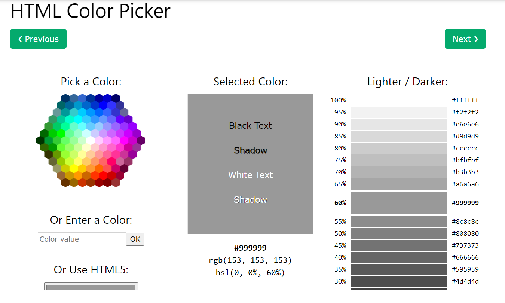

A feladatról általánosan: az informatika nem az én asztalom, és eddig összesen 1 weblapot csináltam még gimnáziumban.
Ezért kezdetben kicsit megijedtem a feladattól, de végül szinte gond nélkül sikerült megcsinálni és még élveztem is.
Már az elején elhatároztam hogy nem tervezek nagyon komoly, komplikált weblapot csinálni, minimalista stílusban szerettem volna létrehozni.
Első lépésben vázlatot készítettem kézzel papírra, illetve egyidejűleg word dokumentumban elkezdtem összefoglalni a tartalmi egységeket, szövegeket megírni, de tudtam hogy ez a kód írása közben még változni fog.


Ezután jött a kezdőoldal megtervezése a tartalmi követelmények alapján.
Meghatározni a 4 oldal címét, tartalmát illetve a valós tartalom létrehozása.
Amikor kész lett a fix header rész, amit minden oldal tartalmaz, egyesével megformáztam az többi lapot is. Ott már csak egy kis formázás kellett, az nem okozott problámát, de volt ahol elszórakoztam vele egy darabig.
Segítségként igénybe vettem a tavalyi terméktervezőknek szóló gyakorlati videót, illetve megnéztem néhány oldalt, Youtube videót, de ezeket igazából nemtudtam hasznosítani.
Habár a munkám nem túl színes, sokat gondolkoztam a színválasztáson, illetve keresnem kellett egy oldalt is ami a színkódokat határozta meg.

Összességében én ezt egy hasznos beadandó feladatnak tartom, főleg arra tekintettel hogy ennek később tartalma bővülhet, és valóban hasznát vehetjük, különböző partnerekkel való bemutatkozáshoz.